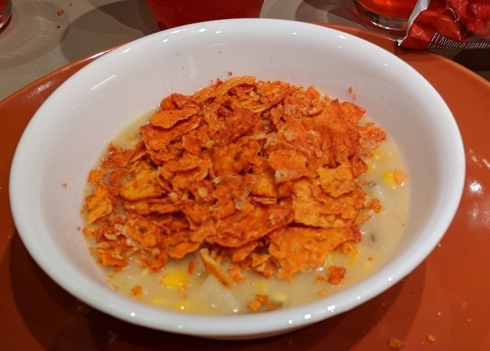

Doritos Cereal

Description
Delicacy made with two very simple ingredients: Doritos and Mountain Dew
Ingredients
- A bag of doritos
- A bottle of Mountain Dew
Steps
- Crash the doritos while still in the bag, using a heavy object, like a shoe, or the moon.
- Take a bowl and pure in the Mountain Dew until it's full. Drink the rest.
- Pure the broken doritos in the bowl. Be careful not to overdo it as we want a soupy consistency, not a sludge (you're not an animal).
- Enjoy as lunch, second breakfast or late dinner!
Return to Home Page